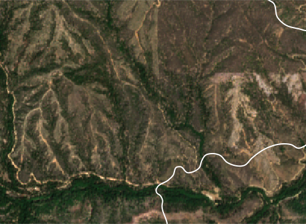
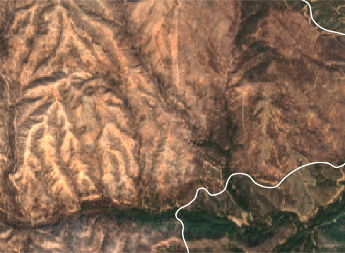

Parts 01 to 03 produced a DoD we trust to about 15 cm, and sig_slope, the change in that DoD that clears a slope-based level of detection. Part 03 also showed that this 95% level is optimistic, with about 11% of stable cells passing instead of 5%, so some of the smallest significant change here is noise. The calibrated LoD in part 03 keeps about 40% less net lowering. In this part we summarize that change the way a response team would ask about it: by burn severity, by subwatershed, and in channels versus hillslopes, and then run a 10 m screening pass that combines topographic and spectral change.
True color from the two Sentinel-2 scenes behind the burn severity, eight days before ignition and five weeks after the storm. Both dates share one color stretch, so a change in color is a change on the ground.
for label, day in (("pre", "21 July 2022"), ("post", "9 September 2022")): view = gj.Map(width=500) view.d_rgb( red=f"s2_{label}_red@PERMANENT", green=f"s2_{label}_green@PERMANENT", blue=f"s2_{label}_blue@PERMANENT", ) view.d_vect(map="mckinney_perimeter@PERMANENT", fill_color="none", color="white", width=2 )print(f"Sentinel-2, {day}") view.show()
Sentinel-2, 21 July 2022

Sentinel-2, 9 September 2022

Burn severity
burn_severity comes from Sentinel-2 dNBR between 21 July and 9 September 2022, classed with the thresholds MTBS published for this fire. NBR uses the 20 m shortwave infrared band resampled to 10 m, and the thresholds come from a Landsat assessment, so treat the classes as approximate. See data/README.md for the details.
Volumes grow with area, so compare classes by volume per hectare as well. Lowering is negative here, while part 03 reported erosion as a positive volume. The cells are 1 m, so the sum of a DoD in meters is a volume in cubic meters.
def zonal_sums(cover, zones):return { z["zone"]: (z["zone_label"], z["sum"], z["n"])for z in tools.r_univar(map=cover, zones=zones, format="json") }area = { z["zone"]: z["n"]for z in tools.r_univar(map="dod_debiased", zones="burn_severity@PERMANENT", format="json" )}lowering = zonal_sums("sig_lowering", "burn_severity@PERMANENT")raising = zonal_sums("sig_raising", "burn_severity@PERMANENT")print(f"{'class':22}{'area ha':>9}{'lowering m3':>13}{'raising m3':>12}{'net m3/ha':>11}")for zone, label, _, _ insorted((k, *v) for k, v in lowering.items()): hectares = area[zone] /10_000 low = lowering[zone][1] rise = raising.get(zone, (None, 0.0))[1]print(f"{label:22}{hectares:>9.1f}{rounded(low):>13,.0f}{rounded(rise):>12,.0f}"f"{rounded((low + rise) / hectares):>+11,.0f}" )
class area ha lowering m3 raising m3 net m3/ha
Unburned to low 85.6 -17,000 11,000 -73
Low 127.0 -51,000 24,000 -210
Moderate 241.5 -190,000 14,000 -720
High 188.4 -220,000 25,000 -1,000
Increased greenness 0.2 -14 4 -52
Net lowering per hectare rises with every step in burn severity. High severity ground lost about 1,000 m3 per hectare, about five times the low severity class and fourteen times the unburned to low class.
Read this as surface lowering, not eroded sediment. Burned ground also lost duff, litter, and understory, and the lidar ground filter sees a different surface after a fire, so part of the lowering is the fire itself. Net lowering per hectare is about the same on hillslopes as in channels (below), which also points to a broad drop of the surface rather than erosion alone.
Change by subwatershed
A response team allocates by drainage. Split the region into subwatersheds of at least 20 ha with r.watershed and total the significant change in each. Subwatersheds cut by the edge of the region only carry the part inside it.
tools.r_watershed(elevation="dtm_2022", threshold=200_000, basin="basins", flags="a")tools.r_to_vect(input="basins", output="basins", type="area", flags="s")tools.r_stats_zonal(base="basins", cover="sig_slope", method="sum", output="basin_net")# Red for net lowering, blue for net raising, symmetric about zero.stats = tools.r_univar(map="basin_net", format="json")extreme =max(abs(stats["min"]), abs(stats["max"]))tools.r_colors(map="basin_net", rules=io.StringIO(f"{-extreme} 178:24:43\n0 247:247:247\n{extreme} 33:102:172\n"),)net =sorted( ( (z["zone"], z["sum"], z["n"])for z in tools.r_univar(map="sig_slope", zones="basins", format="json") ), key=lambda item: item[1],)print("Subwatersheds with the most net lowering:")for zone, total, _ in net[:5]:print(f" basin {zone:>5}: {rounded(total):>+12,.0f} m3")
Subwatersheds with the most net lowering:
basin 56: -78,000 m3
basin 82: -73,000 m3
basin 42: -55,000 m3
basin 46: -44,000 m3
basin 76: -34,000 m3
area ha lowering m3 raising m3 net m3/ha
channel 97.0 -98,000 39,000 -610
hillslope 547.7 -380,000 35,000 -620
The net change per hectare is about the same in channels and on hillslopes, but channels both lost and gained more. They lost about 1,000 m3 per hectare against about 690 on the hillslopes, and gained about six times as much per hectare, where material moving off the slopes settled.
A 10 m screening pass
r.dem.screen is a coarse first pass for directing field crews. It flags topographic change where the DoD exceeds a threshold and spectral change where vegetation was lost, and ranks cells with both highest. Here the spectral change is the NBR change, post minus pre, so loss is negative.
Averaging to 10 m smooths the DoD, so a 10 m cell rarely moves as much as its steepest 1 m cells. At 0.5 m almost no cells pass; at 0.25 m about 5% show both topographic and spectral change, a workable list for a field crew. Spectral change alone covers most of the burn scar, so the combined class is what narrows the search.
With roads or other infrastructure as a vector map, the r.dem.screen options infrastructure= and hazard_output= mark where change meets assets.
Hand-off files
Emergency managers work in desktop GIS. Export the significant change and the screening result as cloud-optimized GeoTIFFs, and the subwatersheds with their net change as a GeoPackage. All three open in ArcGIS Pro and QGIS.
from pathlib import Pathexports = Path("exports")exports.mkdir(exist_ok=True)tools.r_out_gdal(input="sig_slope", output=str(exports /"sig_slope.tif"),format="COG",type="Float32", flags="cf",)# The screening result is 10 m, so export it on a 10 m region.with gs.RegionManager(region="focal@PERMANENT", res=10, flags="a"): tools.r_out_gdal(input="screen", output=str(exports /"screen.tif"), format="COG")tools.v_rast_stats(map="basins", raster="sig_slope", method="sum", column_prefix="net_m3", flags="c")tools.v_out_ogr(input="basins", output=str(exports /"basins.gpkg"), format="GPKG")for path insorted(exports.iterdir()):print(f"{path}: {path.stat().st_size /1e6:.1f} MB")
Curtis et al. (2025) describe the 2 August 2022 storm over the burn scar: rainfall rates above 200 mm/h and 3-hour totals above 100 mm, highest in Humbug Creek, followed by rill and gully erosion and debris flows that scoured channels and left fans in lower reaches. USGS post-fire debris-flow models predicted 57,000 to 3,676,000 m3 of debris-flow volume for Humbug Creek, for a design storm with a 15-minute intensity of 40 mm/h. The observed rainfall rates were well above that.
Our volumes measure something different. They cover 6.4 km2 of the watershed, they include all surface lowering above the level of detection, not only sediment that left, and they span September 2013 to fall 2022, not just the storm. The DoD tells you where the surface changed and by how much. Attributing that change to the storm, to the fire, or to sediment delivery takes the field evidence and additional dates.
Curtis, J.A., et al., 2025. 2022 McKinney rain-on-wildfire event, dissolved oxygen sags, and a fish kill on the Klamath River, California. Scientific Reports 15, 24668. https://doi.org/10.1038/s41598-025-08179-9
Your turn
Rerun the subwatershed totals with threshold=50_000 (5 ha) to see the change at the scale of individual hillslope gullies, or rerun the screening pass with topo_threshold=0.5 and compare the class areas.